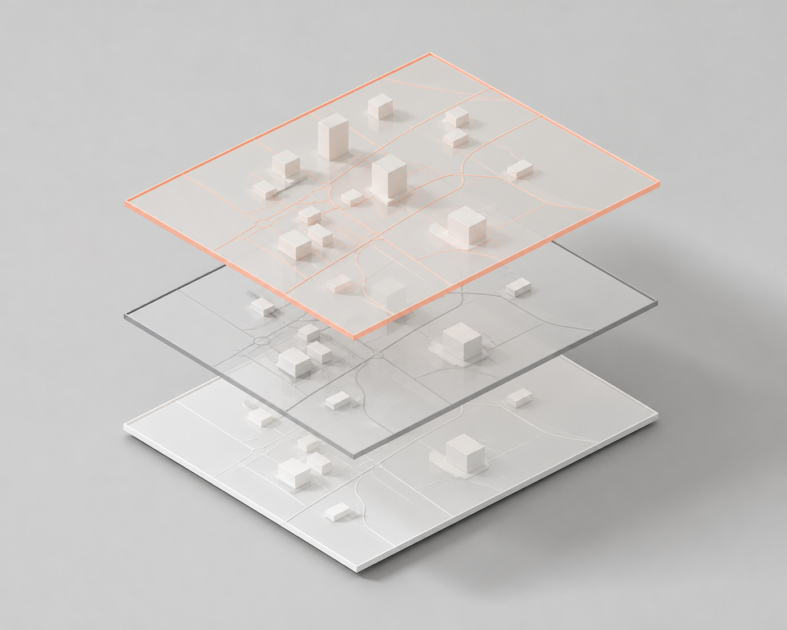

주소의 이름과 손님의 이름이 다를 때 — 지명 세 층을 맞추는 순서
법정동 주소, 행정동, 손님이 부르는 생활권 이름은 서로 다릅니다. 화성 여울동 명칭 변경과 광교의 두 시 경계 사례를 바탕으로, 가게 정보에 세 이름을 맞춰 놓는 순서를 정리했습니다.
가게를 찾아오는 손님은 주소를 검색하지 않습니다. 자기가 부르는 동네 이름을 검색합니다. 그래서 서류에 적힌 지명, 행정 구역의 지명, 사람들이 입에 올리는 지명이 세 겹으로 갈라져 있을 때, 가게 정보에는 보통 첫 번째 것만 남습니다. 이 글은 세 겹의 이름을 한 장의 표로 맞춰 놓는 순서를 다룹니다.
지명은 왜 세 겹으로 갈라져 있나#
행정은 서류를 기준으로 움직이고, 사람은 발걸음을 기준으로 움직입니다. 개발 단계에서 붙은 택지지구 이름은 주민들 입에 먼저 오르지만, 주소 체계는 그 아래 법정동 이름으로 남습니다. 행정동은 그 사이에서 주민센터 단위로 묶여 있습니다. 세 겹이 일부러 어긋난 것이 아니라, 각자 다른 목적으로 만들어진 이름이라서 겹치지 않는 것입니다.

이 구조를 이해하면 몇 가지 혼란이 사라집니다. 주소를 정확히 말했는데 손님이 못 찾는 일, 손님이 말하는 동네 이름이 등기부와 다른 일, 같은 동네 안에서 검색어가 여러 갈래로 나뉘는 일은 모두 같은 원인입니다.
바뀐 지명은 검색 혼선을 남깁니다#
화성특례시는 2026년 3월 1일부터 동탄6동 관할 법정동 '오산동'을 '여울동'으로 바꿨습니다. 시가 안내문에 적은 배경이 결정적입니다. 인접한 오산시에 같은 이름의 '오산동'이 있어 우편물이 잘못 가고 주소 착오가 반복됐고, 지도 검색에서는 오산시 오산동이 우선 노출되는 혼선이 계속됐다는 것입니다. 지도와 검색이 지명을 기준으로 움직인다는 사실을 지자체가 직접 확인한 사례입니다. 주민 설문 응답자 83%가 변경에 찬성했고, 주민등록 등·초본부터 등기부등본까지 공부상 명칭이 함께 바뀌었습니다.
명칭이 바뀐 동네에서 장사하는 사장님이라면 확인할 순서가 있습니다. 서류가 먼저이고, 가게 정보가 다음입니다.
| 순서 | 대상 | 확인할 것 |
|---|---|---|
| 1 | 사업자등록증·임대차계약서 | 새 지명으로 정정됐는지, 시행일 전후 자료 보관 |
| 2 | 플레이스·지도 서비스 주소 | 새 지명 반영 여부, 옛 지명 표기 잔여 |
| 3 | 예약 상품·안내문·영수증 | 옛 지명과 새 지명이 섞여 있는지 |
| 4 | 블로그·SNS 소개글 | 제목과 첫 문단에 쓴 지명 |
플랫폼마다 지명 변경을 반영하는 시점이 다를 수 있어, 옛 지명을 즉시 지우기보다 새 지명과 함께 두는 편이 안전합니다. 이 부분의 반영 시점은 각 서비스 화면에서 확인해야 합니다.
한 지명이 두 도시에 걸친 경우#
광교신도시는 수원시 영통구 이의동·원천동·하동과 용인시 수지구 상현동 일원(기흥구 영덕동 일부 포함)에 걸쳐 있습니다. 면적 기준으로 수원시가 88%, 용인시가 12%이고, 2005년 착공해 2024년 12월 31일 준공됐습니다. '광교'라는 한 이름 안에서 주소를 열어 보면 시와 동이 갈라져 있습니다.
이런 지역에서 생기는 실무 문제는 명확합니다. 손님은 '광교'로 말하고, 서류는 '하동' 또는 '상현동'으로 적고, 검색은 양쪽 모두에서 들어옵니다. 가게 정보가 한 겹만 가지고 있으면 나머지 겹에서 오는 손님은 전부 흘러나갑니다.
세 이름을 한 장에 정리하는 방법#
종이 한 장에 세 줄을 그으세요.
- 법정동 주소. 도로명 주소와 지번 주소. 사업자등록증과 임대차계약서에서 확인합니다.
- 행정동. 관할 주민센터 이름. 주민센터 안내와 시·구 홈페이지에서 확인합니다.
- 생활권 이름. 손님이 실제로 말하는 동네·역·단지 이름. 자료에는 없습니다. 최근 3개월 리뷰에 쓰인 표현, 전화로 길을 물어오는 방식, 배달 주문서 요청사항에서 뽑아냅니다.
세 번째 줄이 실무의 핵심입니다. "광교상현역 근처", "○○아파트 뒷골목"처럼 손님이 남긴 표현이 곧 우리 가게의 검색 이름입니다. 이 표가 있으면 플레이스 소개, 글 제목, 예약 확인 문자를 쓸 때마다 기준이 고정됩니다.
어디에 어떤 겹을 쓰나#
- 플레이스 소개 첫 두 줄. 생활권 이름과 법정동을 이어 적습니다. "광교상현역 3분, 하동 소재"처럼요.
- 글 제목과 첫 문단. 소재에 맞는 겹을 하나씩 고릅니다. 주차 이야기에는 역 이름이, 단체 예약 이야기에는 단지 이름이 자연스럽습니다.
- 리뷰 답글. 손님이 쓴 지명을 그대로 받아 적으면 다음 손님이 그 표현으로 검색했을 때 걸릴 재료가 됩니다.
- 예약 확인 문자와 영수증. "광교상현역 3번 출구에서 200m(하동)"처럼 한 줄로 두 겹을 함께 씁니다.
생활권 이름을 문단마다 반복하면 광고로 읽힙니다. 한 글에 두세 번이면 충분합니다. 지명별 검색량 비교 같은 수치는 공개 자료로 확인되지 않으니 추정하지 말고, 우리 가게에 실제로 들어온 검색어를 기준으로 삼으세요.
이 방법으로 해결되지 않는 것#
- 서류와 화면의 시차. 명칭 변경 시행일 이전에 발급된 서류는 옛 이름입니다. 정정 절차가 필요한지 해당 기관에 확인해야 합니다.
- 플랫폼 반영 시점. 지도·검색 서비스가 새 지명을 언제 반영하는지 공개 자료로 확인하지 못했습니다. 화면에서 직접 확인하세요.
- 상호 중복. 생활권 이름을 상호에 넣을 때는 같은 상권의 유사 상호와 상표 문제를 먼저 확인해야 합니다.
- 지역별 검색량. "광교"가 "하동"보다 몇 배 검색된다는 식의 숫자는 확인되지 않습니다.
자주 묻는 질문#
법정동과 행정동 중 무엇을 검색에 써야 하나요?#
둘 다 쓰되 역할을 나누세요. 서류와 인증에는 법정동이 기준이고, 손님이 찾아오는 경로에는 생활권 이름이 효과적입니다. 가게 정보의 소개 문구에는 생활권 이름을 먼저, 법정동을 괄호로 함께 두는 방식이 양쪽 손님을 모두 받습니다.
동네 이름이 바뀌었는데 가게 정보를 바로 고쳐야 하나요?#
서류부터 확인하세요. 사업자등록증과 임대차계약서가 새 지명으로 정리되기 전에 가게 정보만 고치면 나중에 인증·정산 단계에서 설명할 일이 생깁니다. 서류 정리 후 플레이스 주소, 예약 안내문, 영수증 순서로 고치는 편이 빠짐이 적습니다.
생활권 이름이 무엇인지 어떻게 알 수 있나요?#
공식 자료에 없는 이름이라 손님의 말에서 뽑아야 합니다. 최근 리뷰에 반복되는 동네 표현, 전화 문의에서 손님이 말하는 위치 표현, 배달 주문서의 요청사항을 3개월치 모아 보면 세 개 안쪽으로 좁혀집니다.
마무리#
지명 세 겹을 한 장의 표로 정리해 두면 글을 쓸 때마다 동네 이름을 다시 고민하지 않아도 됩니다. 법정동 주소, 행정동, 손님이 부르는 이름. 세 줄만 적어 보내 주시면 카카오톡 채널 (새 탭에서 열림)에서 플레이스 소개·글 제목·예약 문자에 쓸 표현을 정리해 드립니다. 노티스랩은 업체가 제공한 기존 사진·영상을 바탕으로 콘텐츠를 제작하며, 별도 현장 촬영은 기본 서비스로 제공하지 않습니다.
KEEP READING
이어서 읽기
같은 흐름에서 이어지는 글입니다. 지금 매장에 해당하는 지점부터 읽으시면 됩니다.

손님 반경은 감이 아니라 숫자입니다 — 키워드보다 먼저 확인할 네 가지
무료 상권 데이터로 우리 가게의 손님 반경을 먼저 정하면 지역 키워드가 저절로 좁혀집니다. 소상공인365에서 확인할 네 가지 수치와 반경별 키워드 배치, 데이터로 알 수 없는 것까지 정리했습니다.

용인 소상공인 마케팅, 포곡과 수지에서 같은 전략이 안 통하는 이유
같은 용인이라도 포곡읍과 수지구는 손님이 움직이는 방식이 다릅니다. 주말 목적 방문과 차량 이동, 생활권 밀집과 도보 반복 소비로 나눠 검색 목적과 키워드 설계가 어떻게 갈리는지 정리했습니다.